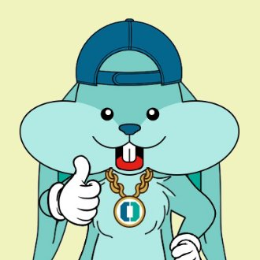
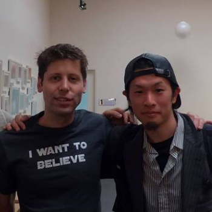
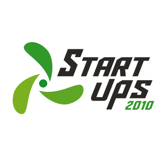
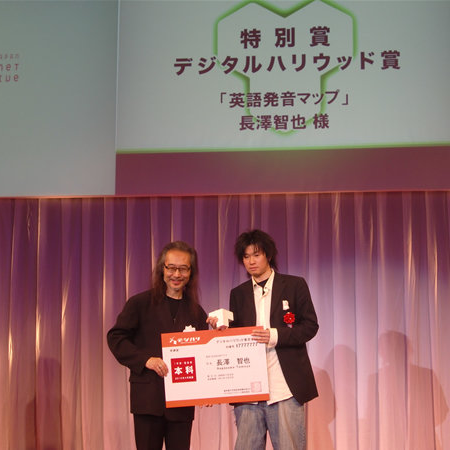
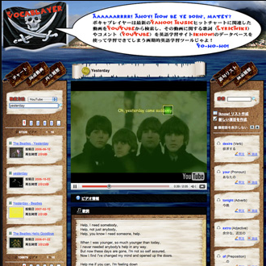

Hi, my name is Tomoya Nagasawa, and my passion lies in programming and language learning. I have lived, studied and worked in 7 countries, and learnt to speak 4 languages.
I'm also obsessed with Natural Language Generation (NLG), and I have been trying so hard for the past decade to emulate how human brain deals with natural languages and put my unique theory into algorithms. I have developed so many tools to accelerate language learning, some of which won developer / startup prizes granted by very notable people and authorities in the tech industry such as the Director of the MIT Media Lab, the President of Digital Hollywood University, Cerego, Yahoo! Japan and Cyber Agent Ventures.
I also came up with a new methodology to quickly learn languages based on subconscious structural pattern recognition. As a result, I started DYPE - Exponential Language Learning with AI. DYPE has been accepted into Y Combinator Startup School and successfuly graduated from the program.
Recently, my interest is a bit shifting towards blockchain, crypto economics and token economy. I have issued an original token called ALIS HackerToken - AHT and been developing a platform to create a brand new economy that is completely independent of any Fiat currencies. I started a decentralized dev group with an increasing number of programmers and creators who share the same vision and something miraculous is about to happen. I call it Cryptoken Economy. Welcome to ALIS Hacker's Club!
I also developed a consensus algorithm called Delegated Proof of Reputation (DPOR) based upon Liquid Democracy and Decentralized Autonomous Organization (DAO) aiming to replace the central authorities called goverments in human societies in the far future. I started OCRYBIT and conducted some social experiments with this algorithm involving more than 10000 people and triggered a bit of a controversy in the twittersphere. No pain, No gain!
My ultimate goal is to create a Decentralized Autonomous Society (DAS) where people communicate in a brand new artificial language created by AI, which is many times more efficient than English, thus, innovation speed will be further accelerated by such communications. Humans will simply get smarter. Society members won't have to work to make a living because of the cryptoken economy we are building which is completely independent of any central authorities. I call it Superhuman Society because our intelligence will be on another level.
OK RabbitALIS is a blockchain based blog platform that pulled off the very first successful ICO in Japan. ALIS's vision is to visualize trust of contents and writers/creators behind them with blockchain technology and let people quickly reach what they are actually looking for instead of the scammy contents on the currently broken web. I was selected as one of the official ambassadors of the project since my visions from other projects overwrap and we can benefit from each other. |
 |
DYPEDYPE is a language learning startup I started based in Berlin but incorporated in Estonia, aiming to disrupt the whole industry with my unique NLG algorithms and a learning platform built on top of it. DYPE was accepted into Y Combinator Startup School 2017 and successfully graduated from the program. Our menter in the program was Geoff Flarity of Kash who is a YC partner. There is no need to explain what Y Combinator is, they are just awesome! |
 w/ Sam Altman |
JIPANGLISHJIPANGLISH was a startup based in Tokyo, aiming to build a language learning platform and we were selected as 1 of 5 winners in one of the biggest startup seed round contests in Japan in 2010. The winners would get hands-on supports from Cyber Agent Ventures and a seed capital up to about 100 million Yen, which was not the case with us. |
 CAV Startups2010 |
English Pronounciation MapYahoo! Japan Internet Creative Award was the biggest annual award of the tech industry in Japan. My language learning tool to let human brain grow to recognize phonetic components of English with a very short period of interactive practice won Digital Hollywood Prize, which was a special prize given to the best entry by under the age of 25. The prize was sponsored by Digital Hollywood University and granted by the President Tomoyuki Sugiyama. |
 |
VOCABLAYERMy music player app to extract words from the lyrics of music videos on Youtube and turn them into flashcards won 1st prize in a developer contest hosted by Cerego and judged by Joi Ito (the Director of the MIT Media Lab / the former CEO of Creative Commons). iknow! is one of the biggest language learning services in Japan wich has 1.5 million users to date. |

VOCABLAYER
|
ALIS Hacker's Club aims to be a decentralized developer group where developers built whatever they want and make a living out of it. We issued our own token called AHT to create a brand new economy which is completely independent of Fiat currencies. We don't do random airdrops, ICO, and exchange listings in order to isolate our token from central authorities. We value creativity and learning, and our vision is starting to widely spread throughout the web. We are building a model case for creating a token economy.
alishackers.clubBlockchain is replacing social functions day after day. One of the ultimate goals is to replace the central govements of human societies with Decentralized Autonomous Organization (DAO). OCRYBIT is developing a unique consensus algorithm called Delegated Proof of Reputation (DPOR) based upon Liquid Democracy. We issue various rankings and scores to experiment our theories such as Daily Blog Rankings and Crypto Influencer Rankings.
ocrybit.comThe beggest difference between native speakers and non-native speakers is how much attention one needs to consciously pay to the structual aspect of the language when speaking. This is what determines one's fluency and a learning methodology focusing on subconscious pattern recognition will drastically reduce the period of time human brain needs to learn languages. We develop a unique NLG algorithm strictly for language learning and a learning platform with AI aiming to make it possible to master a language within 3 weeks.
dy.pe